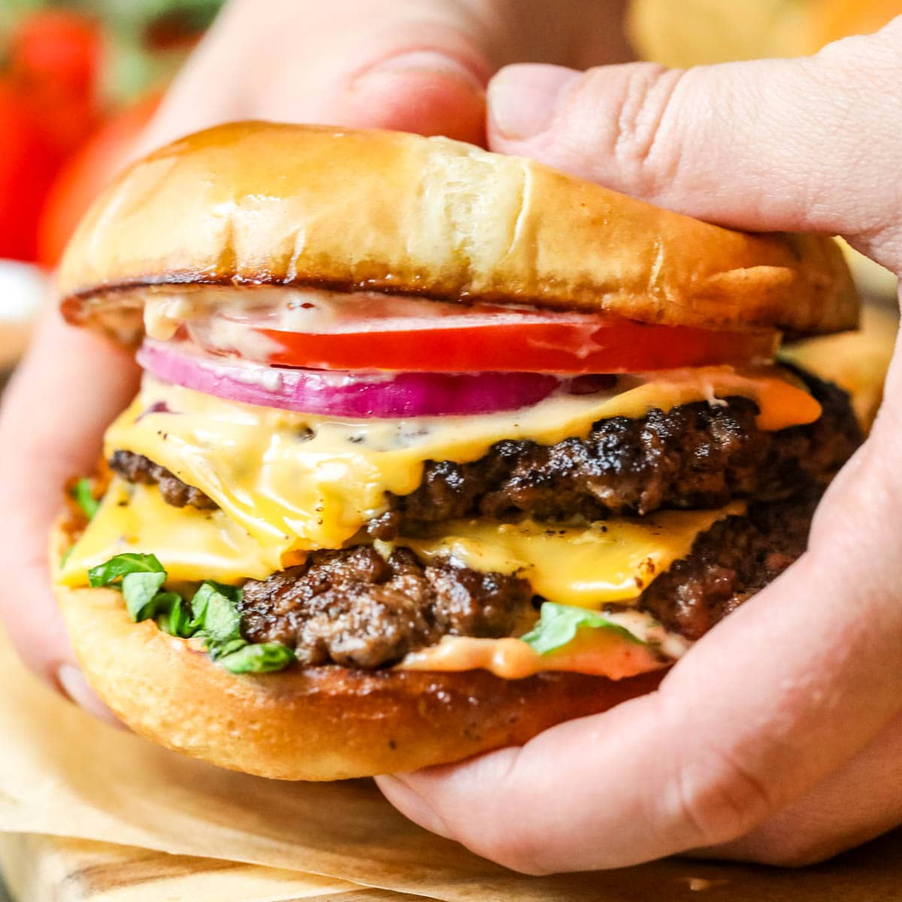

Smash Burgers

Description
This classic Smash Burger recipe will satisfy your fast food cravings and impress your friends and family! Forget about your local McDonalds and make your own delicious burgers!
This recipe is very flexible, many ingredients can be changed to your liking. You can use the fresh crunchy veggies we listed below, or leave them out and replace them with bacon instead!
Ingredients:
- 340g of ground beef (for 4 patties)
- 2 white hamburger buns
- 15g butter, room temperature
- 50g grated mozzarella cheese
- 15g mayonnaise
- 15g ketchup
- 15g mustard
- 15g hot sauce
- salt and pepper
- 4 slices ripe-vine tomatoes
- 20g shredded iceberg lettuce
- 1 sliced onion
- 1 sliced fresh red pepper
- sunflower oil
Steps:
- To make the burger sauce, combine mayonnaise, ketchup, mustard and hot sauce together in a container or bowl.
- Slice your tomatoes, pepper and onions.
- Slice your burger buns in half and spread butter on the inner sides.
- Toast the inner sides in a medium-high heat pan until golden brown.
- On medium-high heat, cover another pan in sunflower oil and add the onions.
- Split your ground beef into 4 patties, 85g each and turn them into balls.
- Place 2 patties in the pan along with the onions, and press them down with a cooking pot (use a non stick foil at the bottom of the pot).
- Cover the meat with salt and peppper.
- Once the bottom side is cooked, flip the burgers and add salt and pepper to the other side, add them with cheese and cover them for 2 minutes until the cheese melts.
- Cover both buns in the burger sauce, add your veggies, meat patties, now caramelised onions, wrap them in foil and enjoy your meal!